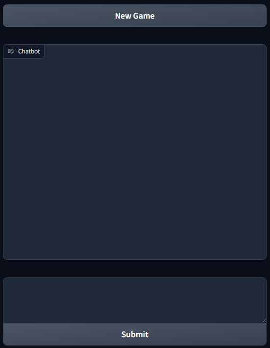
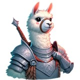
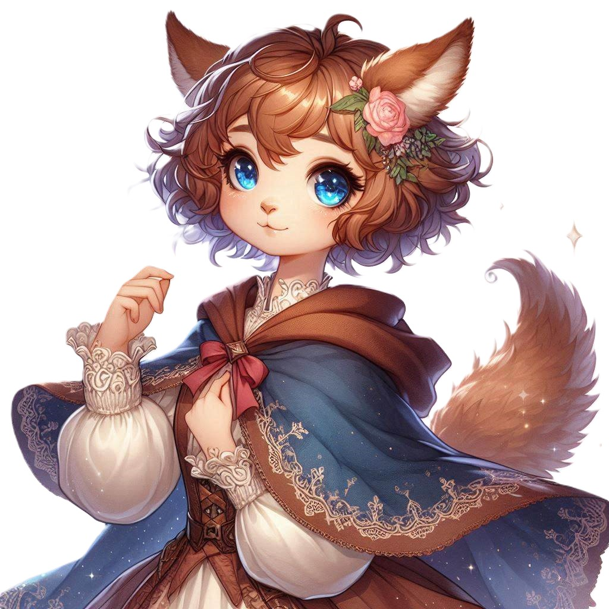

- Game Interface
- My Adventure
Building a Text-Based Adventure Game with Gradio, LLaMA, and OLLAMA
Developers have been using Large Language Models (LLMs) to develop text-based games since GPT-2, but it was difficult to set up. With Gradio, LLaMA 3, and OLLAMA, it is super easy to create a text-based game running locally on your own computer for free.
Before the adventure begins, you can have more background on Gradio, LLaMA, and ollama:
Running_Your_Own_ChatGPT_and_Copilot_with_Ollama
Like the above blog post, ollama API will be used and llama3:instruct model is recommended. Assume you have the model pulled:
game.py
def generate_chat_response(prompt, history = None, model= 'llama3:instruct'):
if model is None:
model = shared.selected_model
messages = []
if history:
for u, a in history:
messages.append({"role": "user", "content": u})
messages.append({"role": "assistant", "content": a})
messages.append({"role": "user", "content": prompt})
data = {"model": model, "stream": False, "messages": messages}
response = requests.post(
config.ollama_url + "chat",
headers={"Content-Type": "application/json", "Connection": "close"},
data=json.dumps(data),
)
if response.status_code == 200:
bot_message = json.loads(response.text)["message"]["content"]
return bot_message
else:
print("Error: generate response:", response.status_code, response.text)
Game Interface

The game interface is not intuitive but should be easy to explain in this blog post:
game.py
import gradio as gr
with gr.Blocks() as demo:
textbox = gr.Textbox(elem_id="input_box", lines=3, min_width=800)
chatbot = gr.Chatbot(show_copy_button=True, layout="panel")
submit_btn = gr.Button(value="Submit")
with gr.Blocks():
nem_game = gr.ClearButton(value='New Game', components = [chatbot])
chat_interface = gr.ChatInterface(
fn=take_action,
textbox=textbox,
chatbot=chatbot,
submit_btn=submit_btn,
retry_btn=None,
undo_btn=None,
)
nem_game.click(fn=start_new_game, output=chat_interface.chatbot_state)
if __name__ == "__main__":
demo.launch()
Besides using Gradio to set up a game interface, instructions about the game background and rules are sent to the LLM when the “New Game” button is pressed. A very nice example of a game instruction can be found at https://github.com/fladdict/llm_games . Replace <to be inserted> with the prompt:
game.py
game_prompt = """
<to be inserted>
"""
game_instruction = ""
def start_new_game():
global game_instruction
response = generate_chat_response(prompt=game_prompt)
game_instruction = response
return []
A copy of game_instruction is saved for later use.
Below is an example of the LLM response when “New Game” button is pressed:
Welcome to Chat Reincarnation: My Childhood Friend, Who Should Have Died, Became a Hero in Another World!
You are about to embark on an extraordinary adventure with your childhood friend, who has reincarnated into another world as a hero. Your journey will take you through chat, where you’ll provide knowledge and guidance to help your friend overcome challenges and defeat the Demon Lord.
Initial Setup:
Your childhood friend’s name is Akira, a 17-year-old girl with short, curly brown hair and bright blue eyes. She has a gentle and curious nature, often seeking advice and support from those around her.
You receive a message from Akira:
“Hey! It’s me, Akira! I know it sounds crazy, but I’m writing to you from another world. I’ve been reincarnated as a hero here, and I need your help. I don’t understand many things about this new world, so I’m counting on you to guide me.”
First Question:
Akira sends her first question:
“What is ‘electricity’?”
Please respond with your answer in the language of your choice (English, Japanese, or any other language).
Story Progress: 0 Rise of Crisis: 0 Technological Innovation: None
Wait for your response to proceed!
The player can now start playing the game by following the instructions and typing in their actions.
However, the chatbot component in Gradio does not know the game prompt and instructions. This is because we skip using the chatbot to communicate with the LLM when starting a new game. To fix this, the take_action function helps place the prompt and instructions at the beginning of history and then passes them to the LLM:
game.py
def take_action(prompt, history = None, model = None):
global game_instruction
global game_prompt
starting = [(game_prompt, game_instruction)]
if len(history) > 0:
starting.extend(history)
return generate_chat_response(prompt, history=starting)
I have put the source together to https://github.com/neoalienson/llama-in-chains
Let’s get the adventure started!
My Adventure
Below is my adventure during the time of writing:

I am bad at physics. Can you tell me about the computer you are using in your world?
Don't worry, I won't hold it against you that you're not great at physics!
Akira’s eyes widen with excitement as she tries to explain the concept of computers:
“O-oh, computers?! They’re like… magical boxes that can store and process tons of information! You can use them to communicate with people over long distances, play games, and even create art and music. We have these things called ‘terminals’ where you can type messages or input commands, and the computer will respond accordingly. It’s really cool!”
Story Progress: 1
Rise of Crisis: 0
Technological Innovation: Basic Understanding of Computers
You’ve taken a step forward in helping Akira understand modern technology! However, the Demon Lord is still lurking in the shadows, plotting his next move…
What would you like to discuss next with Akira? Would you like to explore more about computers or move on to something else?
Please respond with your thoughts, and I’ll continue the adventure!
Ok, can you tell me why you are interested in electricity?
Akira's Curiosity:
Akira leans forward, her eyes sparkling with excitement:
“Oh, electricity is so fascinating! In our world, we don’t have it yet. We use candles and torches for light, and fireplaces for warmth. But the hero who reincarnated me told me about this thing called ‘electricity’ that can power all sorts of devices and make life easier. I want to learn more about it because… well, if we can harness its power, maybe we can create new ways to defeat the Demon Lord and bring peace to our world!”
Story Progress: 2
Rise of Crisis: 0
Technological Innovation: Basic Understanding of Electricity
The more you help Akira understand electricity, the closer she’ll get to unlocking the secrets of this mysterious force! But remember, the Demon Lord is still lurking in the shadows, waiting for his chance to strike…
What would you like to discuss next with Akira? Would you like to delve deeper into the world’s technology or explore other aspects of the story?
Please respond with your thoughts, and I’ll continue the adventure!
Without electricity, how can your computer even work? It doesn't sound logical to me.
Akira's Concern:
Akira furrows her brow, looking puzzled:
“Hmm… I never thought about it that way. You’re right, our computers wouldn’t be able to function without electricity. But… the hero who reincarnated me said something about ‘magic’ and ‘energies’ being involved in how these devices work. Maybe there’s more to it than just electricity?”
Story Progress: 3
Rise of Crisis: 0
Technological Innovation: Basic Understanding of Computer Concepts
You’ve got Akira thinking critically about the technology! However, the Demon Lord is still lurking in the shadows, waiting for his chance to strike…
What would you like to discuss next with Akira? Would you like to explore more about computers or try to help her understand the magical aspects involved?
Please respond with your thoughts, and I’ll continue the adventure!
(Note: Please keep in mind that this is a fantasy world, and the concepts might be different from our own. The goal is to guide Akira’s understanding of modern technology while still respecting the fantastical elements of the story.)
Let's assume computer is powered by magic and not electricity in your world. Can the magical energy be used to save your world?
Akira's Hope: +
Akira's eyes light up with excitement:
“Oh, yes! If we can harness the power of magic, maybe we can use it to defend our world against the Demon Lord! I’ve heard rumors that there are ancient artifacts and spells hidden away, just waiting to be discovered. Maybe we could use those to create a magical shield or find a way to weaken the Demon Lord’s powers!”
Story Progress: 4
Rise of Crisis: 0
Technological Innovation: Basic Understanding of Magical Concepts
You’ve given Akira hope that magic can be used to save their world! However, the Demon Lord is still plotting his next move, and you need to keep working together to stay one step ahead…
What would you like to discuss next with Akira? Would you like to explore more about magical artifacts, spells, or try to come up with a plan to defeat the Demon Lord?
Please respond with your thoughts, and I’ll continue the adventure!
Please use the magical energy to take me into your world.
Magical Portal: +
Akira's eyes shine with excitement as she raises her hand, and a soft blue glow begins to emanate from it. The air around you seems to ripple and distort, as if reality itself is bending to accommodate the magical energy.
Suddenly, you feel yourself being pulled through the shimmering portal, leaving your own world behind. You’re enveloped in a warm, golden light that seems to wash away all worries and concerns. As you emerge on the other side, you find yourself standing in the midst of Akira’s world.
New Environment: +
You take in your surroundings, finding yourself in a lush, vibrant forest teeming with life. The air is filled with the sweet scent of blooming flowers, and the soft chirping of birds creates a soothing background melody. Tall trees stretch towards the sky, their branches heavy with leaves that seem to rustle and whisper secrets to each other.
Akira stands before you, a look of wonder on her face as she takes in your arrival. Her eyes sparkle with excitement, and she beckons you forward with an outstretched hand.
Story Progress: 5
Rise of Crisis: 0
Technological Innovation: Basic Understanding of Magical Travel
You’ve successfully traveled to Akira’s world! But remember, the Demon Lord is still lurking in the shadows, waiting for his chance to strike. You’ll need to work together with Akira to uncover the secrets and challenges that lie ahead…
What would you like to do next? Would you like to explore this new world, search for clues or artifacts, or try to communicate with Akira about your shared goal of defeating the Demon Lord?
Please respond with your thoughts, and I’ll continue the adventure!
Let's ask the trees where the ancient artifacts and spells are hidden.
**Whispering Woods:** +
Akira approaches one of the tall trees, her eyes sparkling with curiosity. She reaches out a hand, as if to touch the trunk, and begins to speak in a soft, melodious voice:
“Trees of wisdom, ancient ones, we seek your guidance. We are on a quest to defeat the Demon Lord and bring peace to our world. Can you reveal to us where the ancient artifacts and spells are hidden?”
The trees seem to stir, their leaves rustling softly as if they’re communing with each other. Then, in unison, they whisper:
“Seek the Oracle of the Ancient Oak, deep within the heart of the forest. There, the secrets of the past await you. But beware, for the path is treacherous, and the Demon Lord’s minions lurk in the shadows.”
Story Progress: 6
Rise of Crisis: 1 (The trees’ warning suggests that danger lies ahead.)
Technological Innovation: Basic Understanding of Magical Communication with Nature
You’ve gained valuable information from the Whispering Woods! However, you now know that the journey will be fraught with peril. What would you like to do next?
Would you like to head towards the Oracle of the Ancient Oak, or explore other parts of the forest for clues and resources? Or perhaps you’d like to seek Akira’s guidance on how to proceed?
Please respond with your thoughts, and I’ll continue the adventure!
Akira, please lead us to the heart of the forest.
**Forest Path:** +
Akira nods, a determined look on her face. She leads you along a winding path, expertly navigating through the dense foliage. The trees grow taller and closer together here, casting dappled shadows on the forest floor.
As you walk, the air grows thick with an otherworldly energy. You can feel the power of the ancient magic emanating from the land itself. Akira pauses, her eyes fixed on something ahead. She whispers: “The Oracle’s grove is near.”
Ancient Oak Grove: +
You push through a curtain of vines and enter a clearing surrounded by towering trees. At the center stands an enormous oak, its bark twisted with age. The air is heavy with the scent of old wisdom.
Akira approaches the tree, her hands extended as if in reverence. She begins to chant softly, and the air around you seems to vibrate with energy. Suddenly, a holographic image materializes before you: a wispy, ethereal figure with eyes that burn like stars.
Oracle’s Vision: +
The Oracle speaks in a voice that echoes through your mind: “Seek the Keystone of Light in the depths of the Crystal Caves. But beware, for the path is fraught with treacherous illusions and ancient guardians.”
The vision fades, leaving you with more questions than answers. What do you want to do next?
Do you:
A) Set out to find the Crystal Caves
B) Ask Akira about the Keystone of Light and its significance
C) Explore the surrounding forest for clues and resources
Please respond with your choice.
The game starts to break. It does not respond with story progress, and instead responds with multiple choice, unlike previous responses. This is because the chat history has reached 8k tokens, which is the maximum number of tokens the model can process at once. How do we solve this? Can we use a different model that supports more context? Or should we summarize the story progress and then pass it to the model? It’s your real adventure now!
